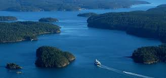
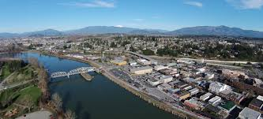

Mount Vernon RV Park
The park is quiet and fits perfectly into the Pacific Northwest complimenting Skagit Valley’s farmland and tulip fields. The park is close to downtown Mount Vernon where you can find delicious food, handcrafted beer, and take a walk along the Skagit River.
The park offers easy access to nearby Anacortes, the Ferries, and the surrounding San Juan Islands. Use Mount Vernon RV Park for a jumping off point to exploring, spending a few months in the valley, or for just a night on your way to your next adventure.
